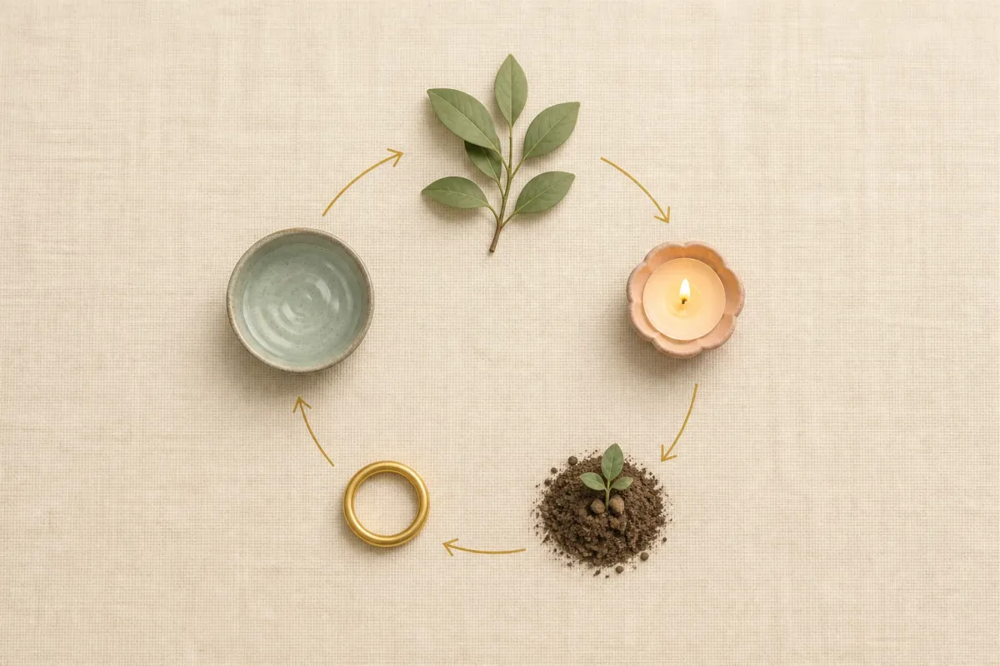
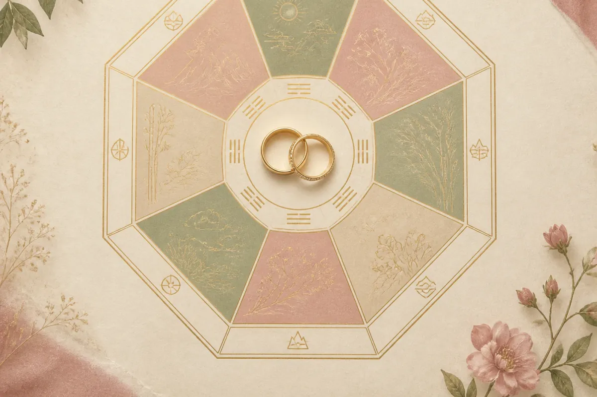

Câu “hai đứa có hợp tuổi không?” thường xuất hiện trong bữa cơm đầu tiên hai nhà gặp nhau. Bạn có thể tin hoặc không tin, nhưng biết trước câu trả lời — và biết vì sao ông bà nói hợp hay không hợp — luôn giúp cuộc nói chuyện đó dễ thở hơn nhiều.
Bài này làm phần “tra cứu” cho bạn: mỗi năm sinh của đối phương được chấm theo bốn tiêu chí, kết quả gom thành một bảng, rồi phân tích kỹ những tuổi hợp nhất và những tuổi nên cân nhắc. Cuối bài là bảng năm cưới đẹp cho tuổi 1998, tính bằng cùng engine với công cụ xem ngày cưới của Templexa.
Nữ 1998 là tuổi gì, mệnh gì, cung gì?
Nữ sinh năm 1998 là tuổi Mậu Dần, cầm tinh con Hổ, mệnh Thành Đầu Thổ (hành Thổ), cung phi Cấn (hành Thổ). Nếu bạn sinh trước Tết Nguyên đán năm 1998, tuổi âm của bạn là Đinh Sửu — hãy dùng bài dành cho năm 1997.
| Năm sinh | 1998 (từ Tết 1998 đến trước Tết 1999) |
| Can chi | Mậu Dần — thiên can Mậu, địa chi Dần |
| Con giáp | Hổ — quyết đoán, mạnh mẽ, thích dẫn dắt |
| Mệnh (nạp âm) | Thành Đầu Thổ — hành Thổ: điềm đạm, thực tế, là chỗ dựa của mọi người |
| Cung phi (nữ) | Cấn — hành Thổ |
| Tam hợp | Dần – Ngọ – Tuất |
| Tứ hành xung | Dần – Tỵ – Thân – Hợi |
Xem tuổi vợ chồng dựa trên những gì?

Dân gian Việt Nam xem tuổi vợ chồng bằng bốn phép so, mỗi phép trả lời một câu hỏi khác nhau. Bài này chấm điểm cả bốn rồi cộng lại, nên bạn thấy được tại sao một tuổi được gọi là hợp chứ không chỉ thấy kết luận.
- Mệnh ngũ hành (nạp âm) — hai mệnh tương sinh (+2 nếu đối phương sinh cho bạn, +1 nếu bạn sinh cho đối phương), bình hoà cùng mệnh (+1), tương khắc (−1 hoặc −2). Trả lời câu: hai người có “nuôi” được nhau không.
- Thiên can — năm cặp tương hợp Giáp–Kỷ, Ất–Canh, Bính–Tân, Đinh–Nhâm, Mậu–Quý (+1); bốn cặp tương xung Giáp–Canh, Ất–Tân, Bính–Nhâm, Đinh–Quý (−1). Trả lời câu: tính cách bề ngoài có “ăn khớp” không.
- Địa chi (con giáp) — tam hợp hoặc lục hợp (+2), tứ hành xung (−2), lục hại hoặc tương hình (−1). Đây là phép ông bà nhắc nhiều nhất: “Dần Thân Tỵ Hợi tứ hành xung”.
- Cung phi (bát trạch) — ghép cung của hai người ra một trong tám “du niên”: Sinh Khí, Thiên Y, Diên Niên (+2), Phục Vị (+1) là tốt; Hoạ Hại, Lục Sát (−1), Ngũ Quỷ, Tuyệt Mệnh (−2) là xấu. Trả lời câu: về chung nhà có yên ổn không.
Tổng từ −7 đến +7. ≥ 5: rất hợp · 3–4: hợp · 0–2: bình thường · dưới 0: nên cân nhắc. Cùng một cặp tuổi có thể “hợp” ở tiêu chí này nhưng “xung” ở tiêu chí kia — chuyện rất bình thường, và là lý do đừng chỉ nhìn một phép.
Bảng xem tuổi chồng cho nữ 1998 (1990–2006)
Cột “Kết luận” là tổng điểm bốn tiêu chí. Bảng cuộn ngang được trên điện thoại.
| Chồng sinh năm | Mệnh | Thiên can | Địa chi | Cung phi | Kết luận |
|---|---|---|---|---|---|
| 1990 Canh Ngọ | Lộ Bàng Thổ ✓ bình hoà | – bình hoà | ✓ tam hợp Dần–Ngọ | Ly · Hoạ Hại ✗ xấu | Bình thường +2 điểm |
| 1991 Tân Mùi | Lộ Bàng Thổ ✓ bình hoà | – bình hoà | – bình hoà | Cấn · Phục Vị ✓ tốt | Bình thường +2 điểm |
| 1992 Nhâm Thân | Kiếm Phong Kim ✓ tương sinh | – bình hoà | ✗ tứ hành xung Dần–Thân, tương hình Dần–Thân | Đoài · Diên Niên ✓ tốt | Bình thường 0 điểm |
| 1993 Quý Dậu | Kiếm Phong Kim ✓ tương sinh | ✓ tương hợp | – bình hoà | Càn · Thiên Y ✓ tốt | Hợp +4 điểm |
| 1994 Giáp Tuất | Sơn Đầu Hoả ✓ tương sinh | – bình hoà | ✓ tam hợp Dần–Tuất | Khôn · Sinh Khí ✓ tốt | Rất hợp +6 điểm |
| 1995 Ất Hợi | Sơn Đầu Hoả ✓ tương sinh | – bình hoà | – lục hợp Dần–Hợi, tứ hành xung Dần–Hợi | Tốn · Tuyệt Mệnh ✗ xấu | Bình thường 0 điểm |
| 1996 Bính Tý | Giản Hạ Thuỷ ✗ tương khắc | – bình hoà | – bình hoà | Chấn · Lục Sát ✗ xấu | Nên cân nhắc -2 điểm |
| 1997 Đinh Sửu | Giản Hạ Thuỷ ✗ tương khắc | – bình hoà | – bình hoà | Khôn · Sinh Khí ✓ tốt | Bình thường +1 điểm |
| 1998 Mậu Dần | Thành Đầu Thổ ✓ bình hoà | – bình hoà | – cùng tuổi | Khảm · Ngũ Quỷ ✗ xấu | Nên cân nhắc -1 điểm |
| 1999 Kỷ Mão | Thành Đầu Thổ ✓ bình hoà | – bình hoà | – bình hoà | Ly · Hoạ Hại ✗ xấu | Bình thường 0 điểm |
| 2000 Canh Thìn | Bạch Lạp Kim ✓ tương sinh | – bình hoà | – bình hoà | Đoài · Diên Niên ✓ tốt | Hợp +3 điểm |
| 2001 Tân Tỵ | Bạch Lạp Kim ✓ tương sinh | – bình hoà | ✗ tứ hành xung Dần–Tỵ, lục hại Dần–Tỵ, tương hình Dần–Tỵ | Càn · Thiên Y ✓ tốt | Nên cân nhắc -1 điểm |
| 2002 Nhâm Ngọ | Dương Liễu Mộc ✗ tương khắc | – bình hoà | ✓ tam hợp Dần–Ngọ | Khôn · Sinh Khí ✓ tốt | Bình thường +2 điểm |
| 2003 Quý Mùi | Dương Liễu Mộc ✗ tương khắc | ✓ tương hợp | – bình hoà | Tốn · Tuyệt Mệnh ✗ xấu | Nên cân nhắc -3 điểm |
| 2004 Giáp Thân | Tuyền Trung Thuỷ ✗ tương khắc | – bình hoà | ✗ tứ hành xung Dần–Thân, tương hình Dần–Thân | Chấn · Lục Sát ✗ xấu | Nên cân nhắc -5 điểm |
| 2005 Ất Dậu | Tuyền Trung Thuỷ ✗ tương khắc | – bình hoà | – bình hoà | Khôn · Sinh Khí ✓ tốt | Bình thường +1 điểm |
| 2006 Bính Tuất | Ốc Thượng Thổ ✓ bình hoà | – bình hoà | ✓ tam hợp Dần–Tuất | Khảm · Ngũ Quỷ ✗ xấu | Bình thường +1 điểm |
✓ tốt · – bình hoà · ✗ xung/khắc. Cung phi của nam tính theo công thức riêng cho nam, khác với nữ.
Nữ 1998 lấy chồng tuổi nào hợp nhất?

Hợp nhất với nữ 1998 Mậu Dần là nam sinh năm 1994 (Giáp Tuất), 1993 (Quý Dậu), 2000 (Canh Thìn). Cụ thể:
- Nam 1994 Giáp Tuất (Sơn Đầu Hoả) — +6 điểm: mệnh Hoả tương sinh với mệnh Thổ của bạn (Hoả sinh Thổ — đối phương nâng đỡ bạn); thiên can không hợp không xung; địa chi tam hợp Dần–Tuất; cung phi Cấn + Khôn = Sinh Khí — tốt.
- Nam 1993 Quý Dậu (Kiếm Phong Kim) — +4 điểm: mệnh Kim tương sinh với mệnh Thổ của bạn (Thổ sinh Kim — bạn là người nâng đỡ); thiên can Mậu hợp Quý; địa chi bình hoà; cung phi Cấn + Càn = Thiên Y — tốt.
- Nam 2000 Canh Thìn (Bạch Lạp Kim) — +3 điểm: mệnh Kim tương sinh với mệnh Thổ của bạn (Thổ sinh Kim — bạn là người nâng đỡ); thiên can không hợp không xung; địa chi bình hoà; cung phi Cấn + Đoài = Diên Niên — tốt.
Điểm chung của các tuổi này: được ít nhất hai trong bốn tiêu chí ủng hộ mạnh, đặc biệt là địa chi (tam hợp/lục hợp) và cung phi — hai phép mà gia đình hay hỏi nhất khi bàn chuyện cưới.
Đã hợp tuổi rồi? Xem luôn ngày cưới đẹp
Nhập ngày sinh hai bạn, công cụ tra kim lâu, hoang ốc, tam tai và lọc ngày hoàng đạo hợp cưới hỏi trong khoảng tháng bạn chọn — miễn phí, theo âm lịch Việt Nam.
Những tuổi nữ 1998 nên cân nhắc
“Cân nhắc” không có nghĩa là “không được cưới”. Nó nghĩa là nếu hai bạn đã yêu nhau, hãy chuẩn bị sẵn câu trả lời cho gia đình — và bảng dưới cho bạn biết họ sẽ hỏi về điểm nào.
- Nam 2004 Giáp Thân — -5 điểm: mệnh Thuỷ tương khắc với mệnh Thổ của bạn (Thổ khắc Thuỷ); thiên can không hợp không xung; địa chi tứ hành xung Dần–Thân, tương hình Dần–Thân; cung phi Cấn + Chấn = Lục Sát — xấu.
- Nam 2003 Quý Mùi — -3 điểm: mệnh Mộc tương khắc với mệnh Thổ của bạn (Mộc khắc Thổ); thiên can Mậu hợp Quý; địa chi bình hoà; cung phi Cấn + Tốn = Tuyệt Mệnh — xấu.
- Nam 1996 Bính Tý — -2 điểm: mệnh Thuỷ tương khắc với mệnh Thổ của bạn (Thổ khắc Thuỷ); thiên can không hợp không xung; địa chi bình hoà; cung phi Cấn + Chấn = Lục Sát — xấu.
- Nam 2001 Tân Tỵ — -1 điểm: mệnh Kim tương sinh với mệnh Thổ của bạn (Thổ sinh Kim — bạn là người nâng đỡ); thiên can không hợp không xung; địa chi tứ hành xung Dần–Tỵ, lục hại Dần–Tỵ, tương hình Dần–Tỵ; cung phi Cấn + Càn = Thiên Y — tốt.
Dân gian có ba cách hoá giải được nhiều gia đình chấp nhận: chọn năm cưới không phạm kim lâu, hoang ốc, tam tai với cả hai; chọn ngày giờ hợp tuổi cả hai (tránh ngày có địa chi xung với một trong hai người); và nhờ người hợp tuổi đi đón dâu, trải giường. Quan trọng nhất vẫn là hai bạn thống nhất trước khi nói chuyện với bố mẹ.
Nữ 1998 cưới năm nào đẹp?
Xem tuổi hợp là xem người; còn chọn năm cưới thì dựa trên tuổi của chính bạn: kim lâu (tuổi mụ chia 9 dư 1, 3, 6, 8), hoang ốc (6 cung theo tuổi mụ) và tam tai (3 năm liền theo nhóm tam hợp). Bảng dưới tính cho tuổi 1998 trong 5 năm tới, cùng công thức với công cụ xem ngày cưới của Templexa:
| Năm cưới | Tuổi mụ | Kim lâu | Hoang ốc | Tam tai | Đánh giá |
|---|---|---|---|---|---|
| 2026 Bính Ngọ | 29 | ✓ không phạm | ✗ Ngũ Thọ Tử | ✓ không phạm | Tạm được |
| 2027 Đinh Mùi | 30 | ✗ Kim Lâu Thê | ✗ Tam Địa Sát | ✓ không phạm | Nên tránh |
| 2028 Mậu Thân | 31 | ✓ không phạm | ✓ Tứ Tấn Tài | ✗ phạm | Tạm được |
| 2029 Kỷ Dậu | 32 | ✓ không phạm | ✗ Ngũ Thọ Tử | ✗ phạm | Nên tránh |
| 2030 Canh Tuất | 33 | ✗ Kim Lâu Tử | ✗ Lục Hoang Ốc | ✗ phạm | Nên tránh |
Với nữ 1998, không năm nào trong 5 năm tới sạch cả ba yếu tố — hãy ưu tiên năm chỉ phạm một yếu tố nhẹ. Theo truyền thống, kim lâu xét theo tuổi cô dâu là chính — tức là bảng này quan trọng với bạn hơn với chú rể. Nếu năm định cưới phạm, nhiều gia đình chọn cưới vào tháng Chạp năm trước hoặc ra Giêng năm sau, hoặc làm lễ trước rồi đãi tiệc sau.
Câu hỏi thường gặp
Nữ 1998 mệnh gì, cung gì?
Nữ 1998 lấy chồng tuổi nào hợp nhất?
Tuổi xung có cưới được không?
Nữ 1998 cưới năm nào đẹp?
Lời cuối
Bảng tuổi nói cho bạn biết ông bà sẽ gật hay lắc. Nó không nói cho bạn biết hai người có sống được với nhau không — chuyện đó do cách hai bạn cãi nhau và làm lành quyết định. Hãy dùng bài này để chuẩn bị cho cuộc nói chuyện với gia đình, rồi chọn ngày, gửi thiệp, và bắt đầu phần thật sự quan trọng.
Nội dung dựa trên quan niệm dân gian (nạp âm, thiên can địa chi, bát trạch), mang tính tham khảo. Cách tính có dị bản giữa các sách; bài này dùng cách phổ biến nhất ở Việt Nam.
Templexa
Đội ngũ làm thiệp cưới online tại Templexa và là người làm công cụ xem ngày cưới theo âm lịch Việt Nam. Bảng trong bài được tính tự động từ cùng bộ luật với công cụ, và cập nhật khi luật thay đổi.